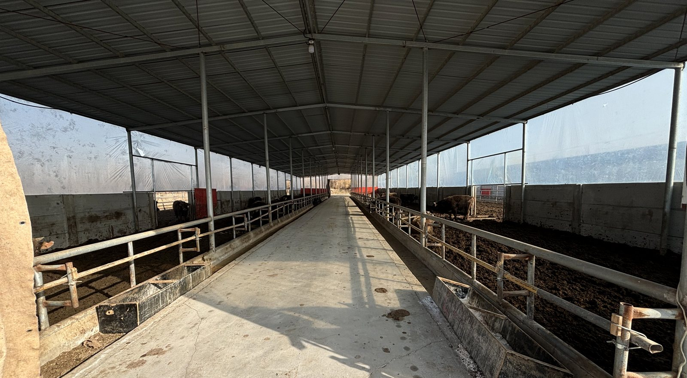
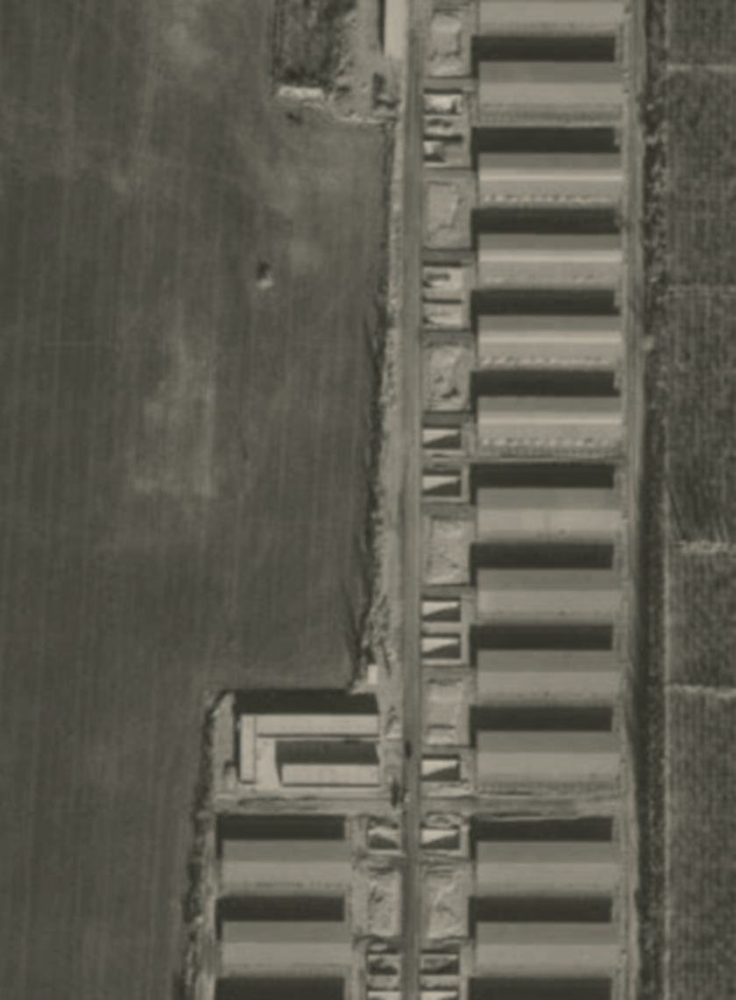
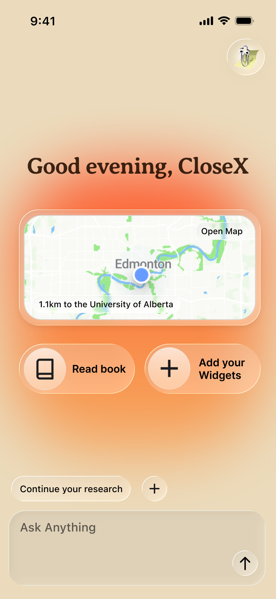
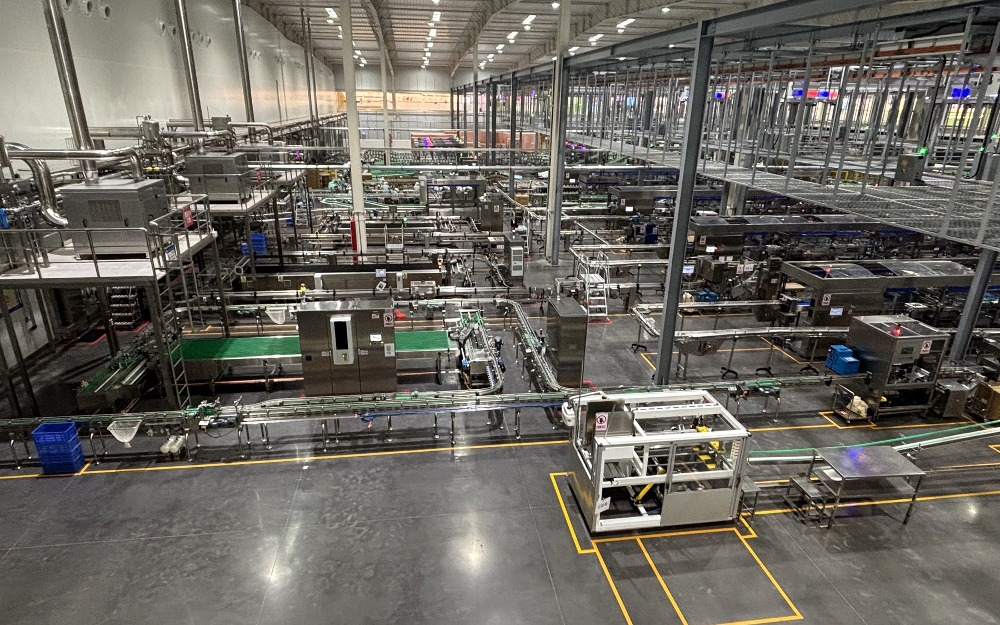
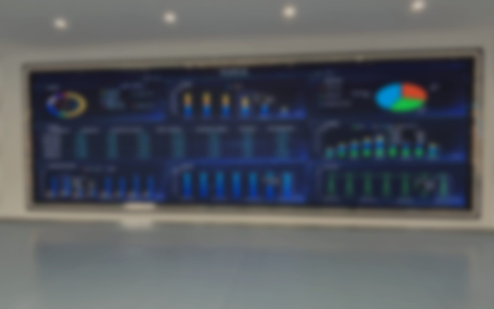
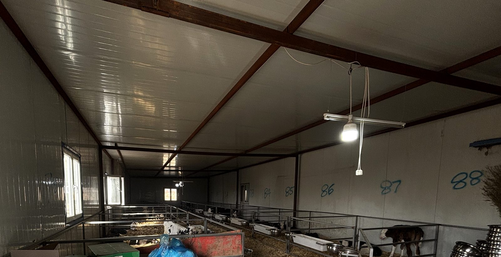
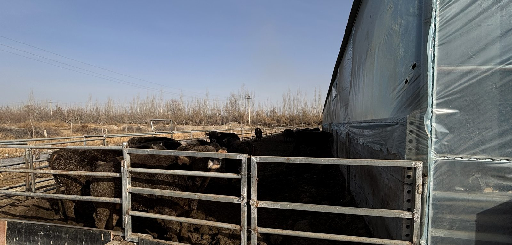
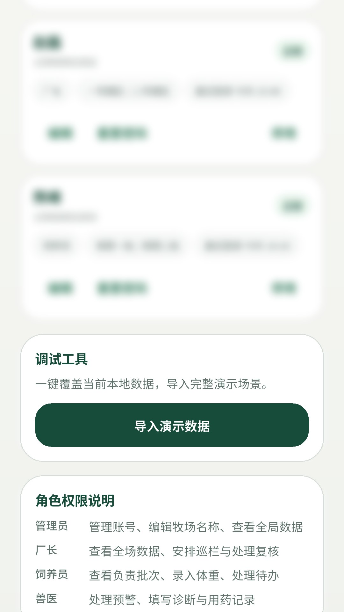
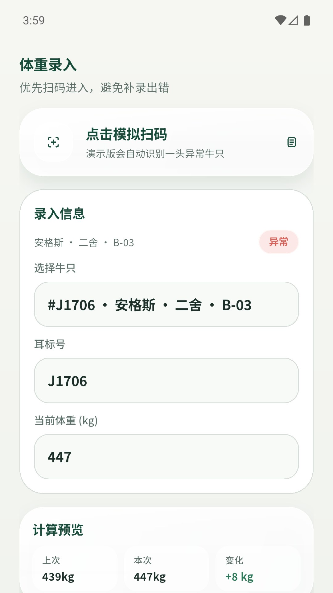

AI-augmented product designer
Samuel Fan
I turn messy field problems into product systems that can actually run.
Research-informed interaction design, product judgement, AI workflows, and MVP implementation.

Featured case study
Smart Livestock Monitoring Platform
A field-led MVP for ranch operations, financial monitoring, role separation, and hardware risk decisions.
Featured Work
One project, shown as evidence of how I think and build.

Smart Livestock Monitoring Platform
Field research changed the product, not just the interface.
I helped move the project from a broad smart-ranch idea into a clearer product system: who it serves, what evidence matters, where hardware risk sits, and what MVP could be installed and tested.
Bank, farm owner, and worker needs were separated instead of forced into one dashboard.
Base-station vulnerability became a GPS/BeiDou evidence and accountability decision.
Demo import validated 4 cattle, 3 alerts, 4 accounts, and cross-tab mobile flows.
Selected Interface Work
Supporting work that shows visual judgement and mobile UI craft.
CloseX / Academic UI/UX Project
A mobile healthcare interface study focused on soft visual direction and homepage composition.
CloseX is a school UI/UX project exploring a softer mobile healthcare interface direction, homepage composition, and visual consistency. It supports the portfolio by showing my interface craft beyond operational tools.

Position Statement / 100 words
Not a fancy UI designer. A product-oriented designer who frames the problem first.
I am an interaction design student moving toward AI-augmented product design. I am not interested in making interfaces look fancy for their own sake. I focus on finding the real problem, translating field research into product decisions, and using AI workflows to move faster from messy input to working MVPs. My practice combines user research, product logic, interface design, front-end implementation, and system thinking. I am strongest when a direction is still vague: I can clarify users, constraints, risks, and workflows, then turn that understanding into a simple product that can actually run in context and serve real people responsibly.
Word count: 100
Additional Field Exposure
A small proof point, separate from the main livestock case study.
Looking at operational systems beyond the screen.
I also observe adjacent operational systems, such as automated production lines and control dashboards, to understand how digital tools sit inside real workflows.


Case Study
Smart Livestock Monitoring Platform
From field interviews to a product system that separated financial risk from daily farm work.
This anonymised project is the strongest evidence of how I work: I translated field evidence, hardware risk, role differences, and MVP constraints into a product direction that could be tested beyond screen mockups.

CONTEXT / INTENT
The job was not to make another dashboard. It was to see whether the system logic could hold.
A smart-ranch idea had to work across finance, daily operations, and front-line labour. Field evidence showed three different jobs inside one product: banks needed trustworthy collateral evidence, farm owners needed practical herd management, and workers needed low-friction daily input. Treating them as one generic dashboard would hide risk, overload the interface, and produce data people might avoid using.

MOVES
I used raw field material to challenge the original assumptions.
My contribution was to conduct semi-structured interviews, document site conditions, review field plans, and turn raw transcripts into product decisions. The key move was reframing the system around risk and role separation: bank workflows, farm-owner decisions, and worker tasks needed different levels of detail, permission, and input.

SOLUTION
The solution became a role-based monitoring MVP, not a single all-purpose dashboard.
I compressed the field research into a product direction with separate views, permissions, and evidence depth for banks, farm owners, and workers. The MVP direction focused on low-friction field input, animal status tracking, alert review, account roles, and a GPS/BeiDou evidence layer for financial risk.
IMPACT / HONEST VALIDATION
The impact was clearer product judgement, not a fake claim of commercial success.
This project is not presented as a shipped public product. The real outcome was reducing ambiguity: the team had a clearer target scenario, a stronger hardware-risk argument, and a testable Android MVP that could prove whether the role-separated workflow made sense before deeper investment.
Target users shifted toward mid-to-large ranches with finance-linked monitoring needs.
Base-station-only coverage was reframed as a trust and tamper-risk problem.
Simulated data import and test flows checked cattle, alerts, accounts, and weight-entry states.
System Decision
The GPS/base-station debate became a system trust question.
The internal analysis showed that a system does not need to be impossible to break; it needs to make breaking it unprofitable and visible. That changed the conversation from pure cost and coverage to evidence, accountability, and financial risk.
One local failure can remove the whole site from view and be explained as a device problem.
Last known time, location, and signal loss create a clearer event for alerts or review.
MVP Proof
Built, imported, and tested with simulated ranch data.
The Android MVP did not stop at empty screens. I used a complete demo dataset and test flows to check whether imported cattle, alerts, accounts, and weight-entry tasks could surface across the mobile workflow. It proves the workflow logic at MVP level, not market adoption.
- Demo dataset import4 cattle / 3 alerts / 4 accounts / 1 treatment scenario.
- Automated verification
demo_import_test.dartchecks import parsing and repository restore. - Cross-tab validation
mvp_flow_test.dartverifies imported data across home, cattle, alerts, and accounts.


REFLECTION
This project made my design role more precise.
I learned that my strongest value is not polishing screens after the product is already decided. It is helping a team ask the right questions earlier: who the system serves, what evidence needs to be trusted, what real workflow constraints exist, and what version can be built first without pretending the field is cleaner than it is.
3-minute presentation route
The page can be presented top to bottom without opening a separate deck.
Use the page in this order when presenting live.
- 0:00-0:15Open with positioning: problem framing over fancy UI.
- 0:15-0:45Explain the ranch, finance, and operator context without exposing private details.
- 0:45-1:30Frame the real problem: trustworthy data, usable field input, and role separation.
- 1:30-2:30Show moves: interviews, synthesis, GPS/base-station analysis, and MVP scoping.
- 2:30-3:00Close with the Android MVP, what changed, and why this defines your design direction.